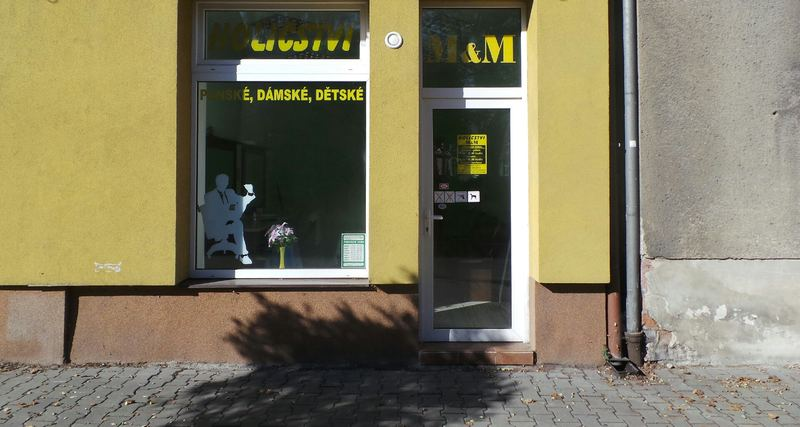
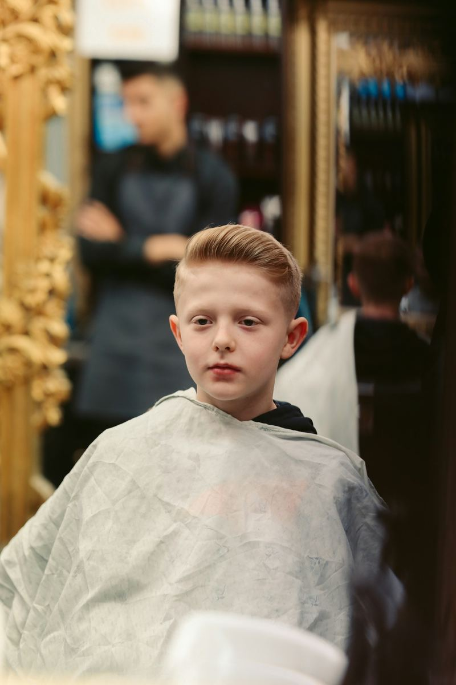

Pánské střihy
Strojek, nůžky, přechody. Úprava vousů na přání.
Holičství M&M na Štefánikově 818. Stříháme pány, dámy i děti, rychle a pořádně. Po–pá 8–15:30, v sobotu 8–11.
Po–pá 8–15:30, so 8–11

Nevíte, jak krátké vlasy chcete? Vyberte číslo nástavce a uvidíte, kolik vlasů zůstane.
Bez dlouhého čekání a bez zbytečných řečí.
Strojek, nůžky, přechody. Úprava vousů na přání.

Krátké i delší vlasy, zastřižení konečků.

Děti stříháme rády a rychle.
„Perfektní rychlé a kvalitní.“
zákazník na Firmy.cz
„Rychlé a dobré ostříhání.“
zákazník na Firmy.cz